Diagnóstico inicial
Reconocer el punto de partida

Nuestra propuesta para el GMMMC integra formación presencial, metodología pedagógica, recursos de aprendizaje y seguimiento para acompañar los avances de cada grupo.
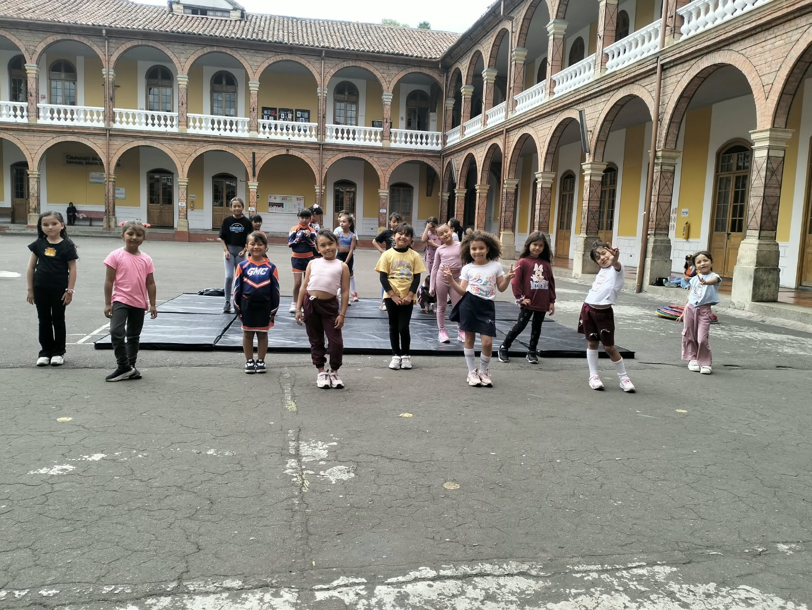
Musicala es una escuela de formación artística comprometida con el desarrollo de habilidades creativas, técnicas y sociales mediante experiencias educativas significativas.
Entendemos el arte como una herramienta para fortalecer la expresión, la disciplina, la autonomía, la confianza y el trabajo en equipo.
Aprender, crear, practicar y compartir.
Un proceso que podemos acompañar en cada etapa.
Una metodología de Musicala para organizar el aprendizaje, reconocer avances y respetar el ritmo de cada estudiante.
Favorecemos el aprendizaje mediante actividades cortas, variadas y progresivas, con metas comprensibles que ayudan a mantener la atención y construir hábitos.
Un ejercicio de Piano Experiencia II muestra cómo una actividad delimitada puede orientar la práctica. Es un recurso institucional de Musicala.
Ver práctica y materiales ↗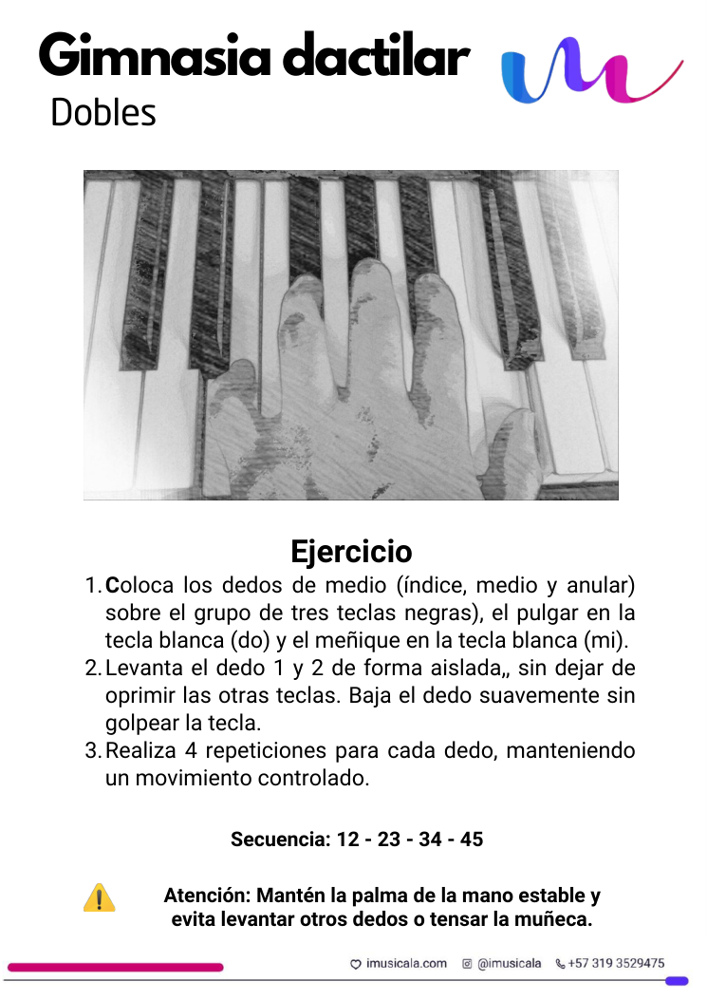
Organizamos el aprendizaje para facilitar avances oportunos, mediante ejercicios estructurados, recursos didácticos y práctica constante, respetando el ritmo de cada estudiante.
Mi experiencia de AutoMusicala Piano organiza objetivos y actividades progresivas; sirve como referencia para diseñar el acompañamiento del GMMMC.
Conocer el aprendizaje entre clases ↗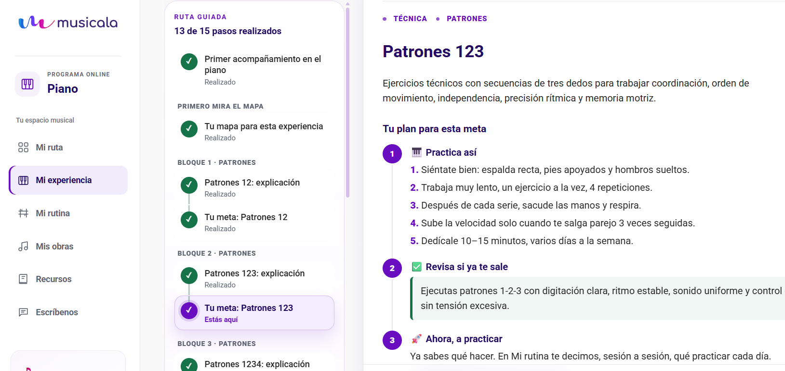
Trabajamos con objetivos observables, evaluación formativa, retroalimentación y evidencias que permiten reconocer los logros y ajustar las estrategias.
Las casillas de Piano Objetivos permiten revisar metas de aprendizaje. Es un ejemplo del recurso físico, no una certificación de logros del GMMMC.
Ver evaluación y objetivos ↗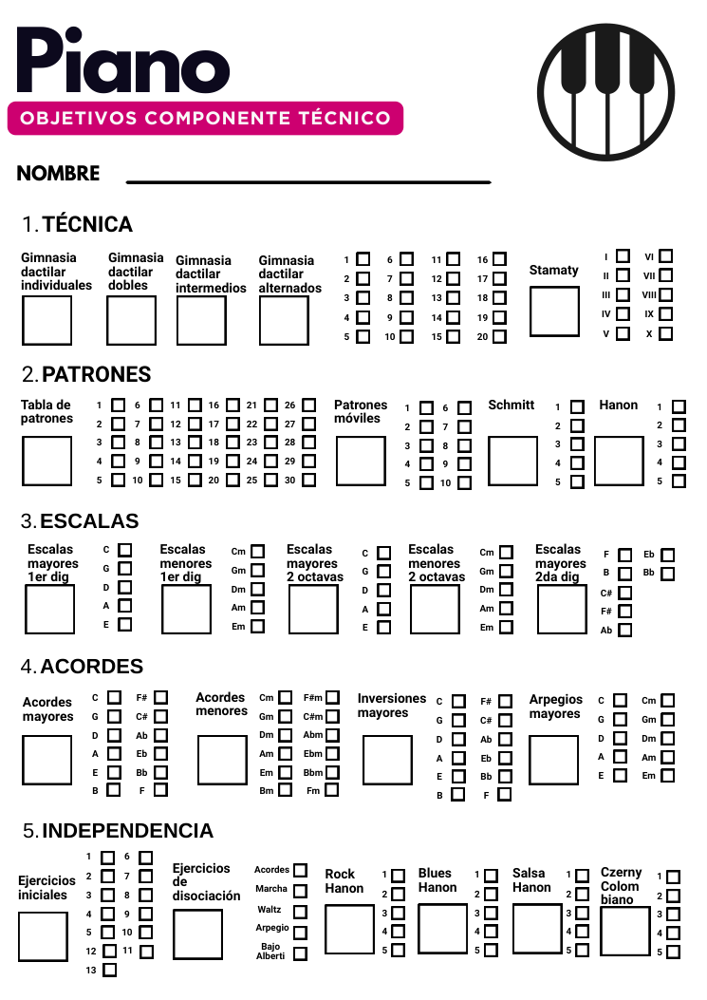
Ajustamos las experiencias a los intereses, conocimientos previos, características y necesidades de los estudiantes y del grupo.
En danza se puede bailar, marcar el pulso o llevar el conteo. Una guía impresa ofrece apoyo cuando no hay dispositivo; son alternativas propuestas según el grupo.
Ver participación y cuidado ↗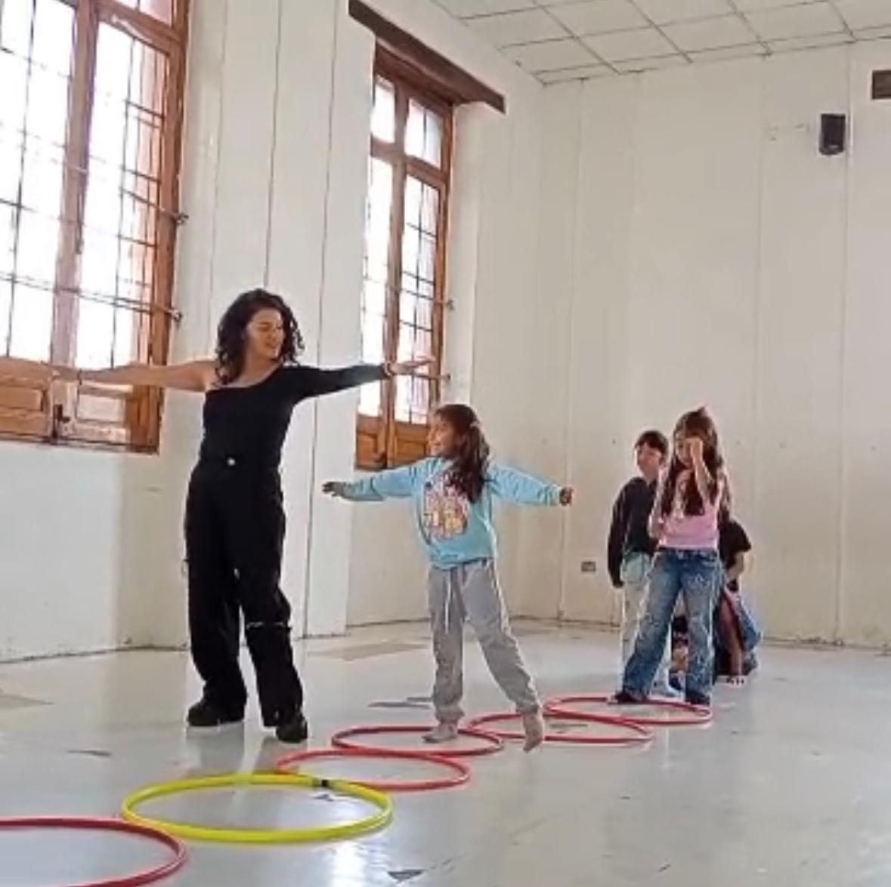
Antes de establecer metas, proponemos reconocer habilidades, experiencias, intereses y necesidades mediante observación, actividades artísticas y ejercicios lúdicos.
Esta referencia permitirá orientar objetivos realistas y valorar los avances posteriores.
Reconocer el punto de partida
Definir metas alcanzables
Practicar, explorar y crear
Observar, retroalimentar y ajustar
Desarrollar y acompañar procesos de formación artística en el GMMMC que fortalezcan las capacidades expresivas, creativas, técnicas y sociales de sus estudiantes, mediante experiencias pedagógicas adaptadas a sus necesidades y herramientas que permitan dar continuidad y seguimiento al aprendizaje.
Habilidades artísticas progresivas en las disciplinas contratadas.
Creatividad, disciplina, confianza y trabajo colaborativo.
Conocimientos y habilidades iniciales de los grupos.
Objetivos de aprendizaje comprensibles y verificables.
Sesiones, avances y próximos pasos del proceso.
Recursos para estudiantes, docentes y familias.
Muestras y posibles experiencias de circulación según el progreso.
Propuestas ajustables a edades, interés y nivel del grupo. La apertura depende de la participación de las familias.
El movimiento como espacio de expresión, creatividad y encuentro.
Preparación corporal, ritmo, coordinación, memoria coreográfica y creación colectiva para explorar estilos y construir montajes progresivos.
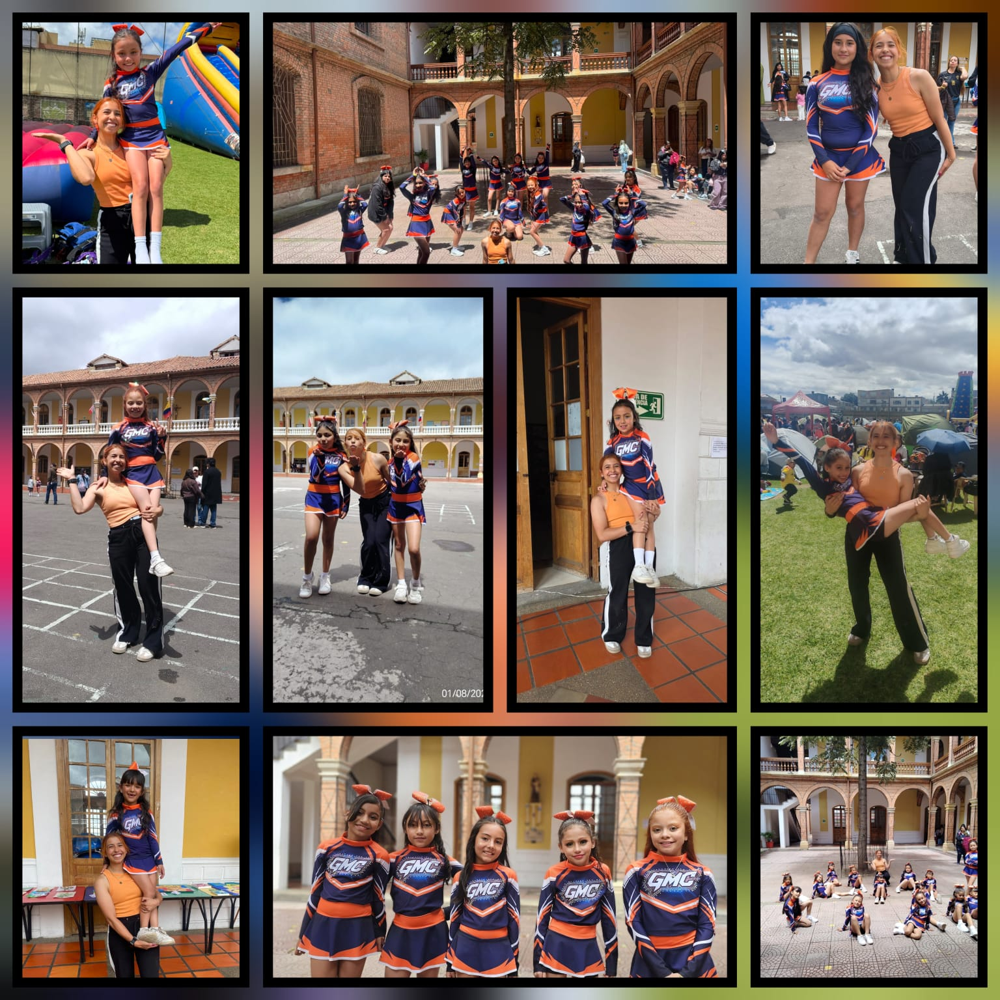
Disciplina, ritmo y confianza para lograr metas en equipo.
Habilidades corporales, formaciones y secuencias progresivas; liderazgo positivo, cooperación y respeto según edades, capacidades y seguridad.
Elevaciones, acrobacias y maniobras de riesgo requieren condiciones técnicas, personal idóneo y protocolos específicos; no forman parte automática de todas las clases.
Ver bitácora real y seguimiento ↗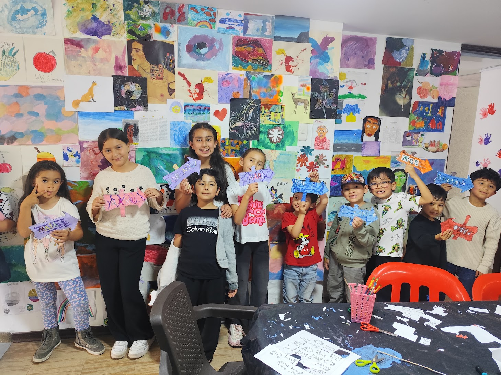
Crear también es una forma de descubrir y comunicar.
Dibujo, color, composición y experimentación para fortalecer creatividad, observación, atención y expresión personal.
Actividades y roles acordes con la confianza, las habilidades y la experiencia de cada estudiante.
Parejas, pequeños grupos y proyectos donde cada participante pueda contribuir.
Metas progresivas, reconocimiento de avances y retroalimentación clara.
Ambientes respetuosos, rutinas predecibles, comunicación adecuada y espacios de expresión.
Observar, registrar y comunicar habilidades técnicas, expresivas y sociales permite ajustar el acompañamiento.
Metas por disciplina, nivel y ciclo.
Objetivos trabajados, avances y pendientes.
Actividades, observaciones y continuidad.
Producciones, fotografías autorizadas y registros.
Compartir aprendizajes individuales y colectivos.
Para estudiantes y familias: checklists y guías ayudan a comprender qué se trabaja, qué objetivos se han alcanzado y cuáles son los próximos pasos.
Danza, porrismo, artes plásticas y música: proponemos guías, checklists de aprendizaje y formatos de seguimiento para acompañar cada área, mostrar objetivos a las familias y dar continuidad sin depender de una conexión.
Objetivos de movimiento, secuencias de práctica y seguimiento del desarrollo corporal.
Metas por nivel, guías de rutinas y registros del trabajo en equipo.
Guías de técnicas, objetivos de creación y portafolios para reconocer avances.
Objetivos por instrumento, práctica guiada y seguimiento del ensamble.
Las páginas de piano y danza son ejemplos institucionales reales de Musicala; no acreditan por sí mismas su uso específico en GMMMC. Los materiales se ajustan a la disciplina, edad y objetivos acordados de cada grupo.
Checklist físico de aprendizajes técnicos, teóricos y de repertorio. Metas visibles para estudiantes y familias.
Consultar documento completo ↗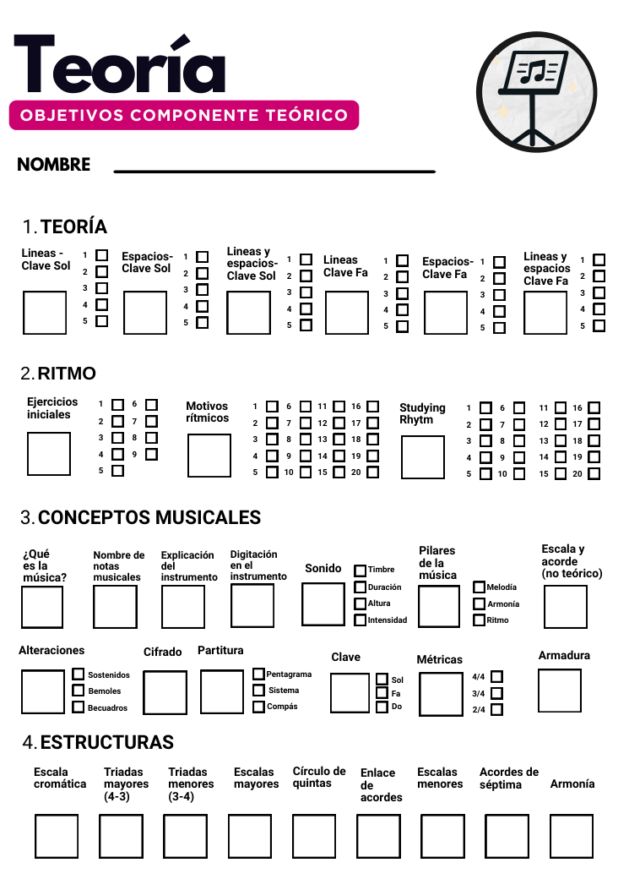
Piano Experiencia II: ejercicios y recursos para la práctica guiada y el progreso entre sesiones.
Consultar documento completo ↗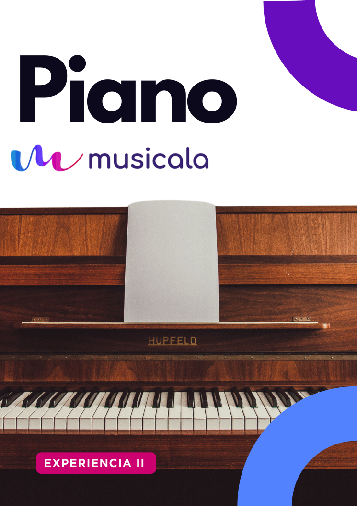
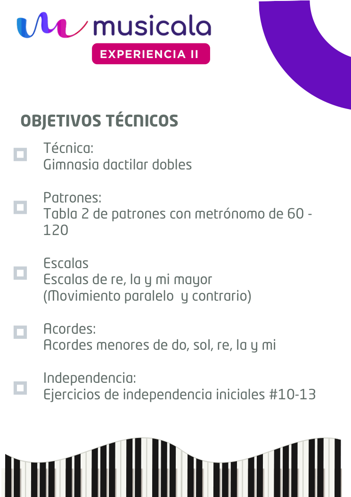
Musikids: objetivos de musicalidad, coordinación y desarrollo técnico. Ejemplo de material Musicala para orientar un proceso progresivo.
Consultar documento completo ↗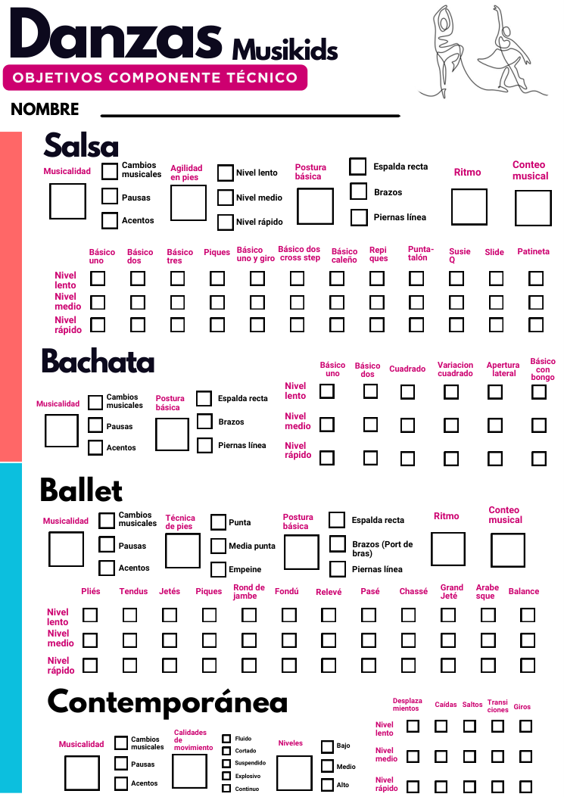
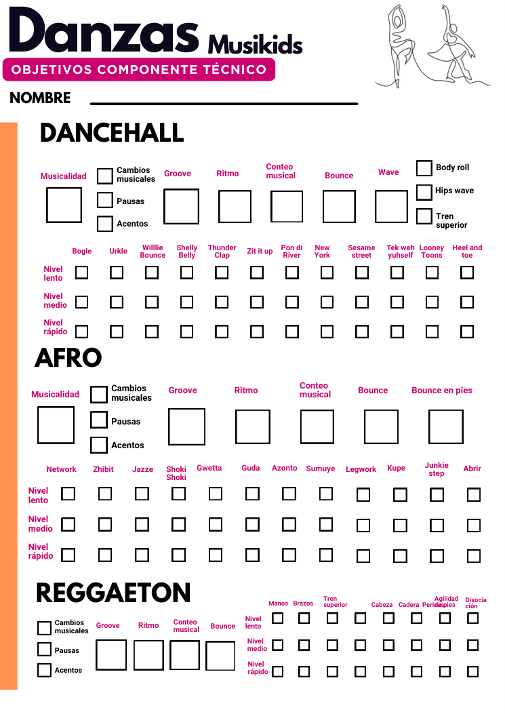
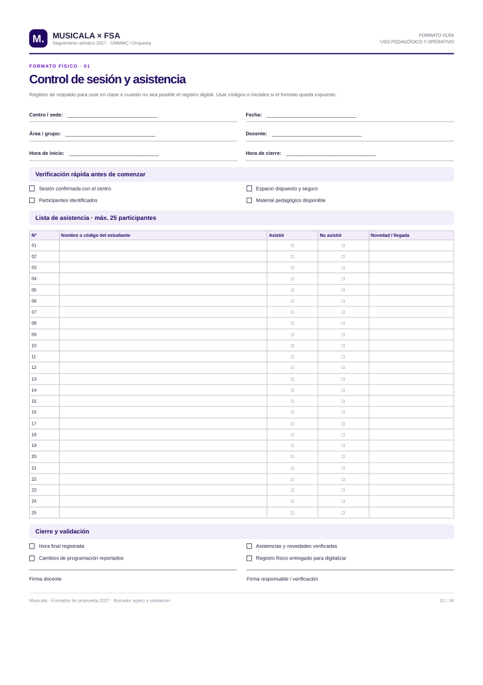
Checklists de objetivos y evaluación, guías de práctica y formatos físicos de asistencia, bitácora e inventario. Un apoyo adaptable a danza, porrismo, artes plásticas y música, también cuando no hay conectividad.
Ver formatos físicos ↗AutoMusicala Piano es una solución real: una referencia para acompañar el aprendizaje de estudiantes del GMMMC, con adaptación por edad y alcance.
Actividades guiadas para dar continuidad entre encuentros.
Volver a los contenidos, también después de una ausencia.
Una ruta visible para orientar el siguiente paso y compartir preguntas con el docente.
Conoce un ejemplo real de nuestras herramientas de aprendizaje autónomo, diseñadas para acompañar la práctica entre clases
Para GMMMC proponemos explorar recursos de las disciplinas contratadas, sujetos al alcance técnico y económico aprobado. No todas las especialidades tienen plataforma completa ni funcionamiento sin conexión.
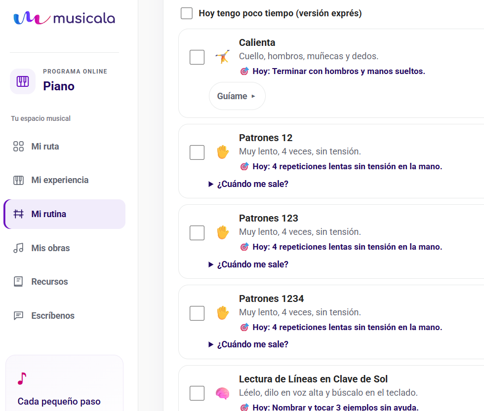
La ruta y la rutina ejemplifican CREA: práctica con concentración, progresión y objetivos visibles. Las guías físicas y el acompañamiento presencial ofrecen alternativas para quienes no cuentan con conectividad.
Conocer el material físico ↓El HUB Docentes reúne programación, estudiantes, asistencia, bitácoras, objetivos y novedades. Puede apoyar la organización de las sesiones del GMMMC.
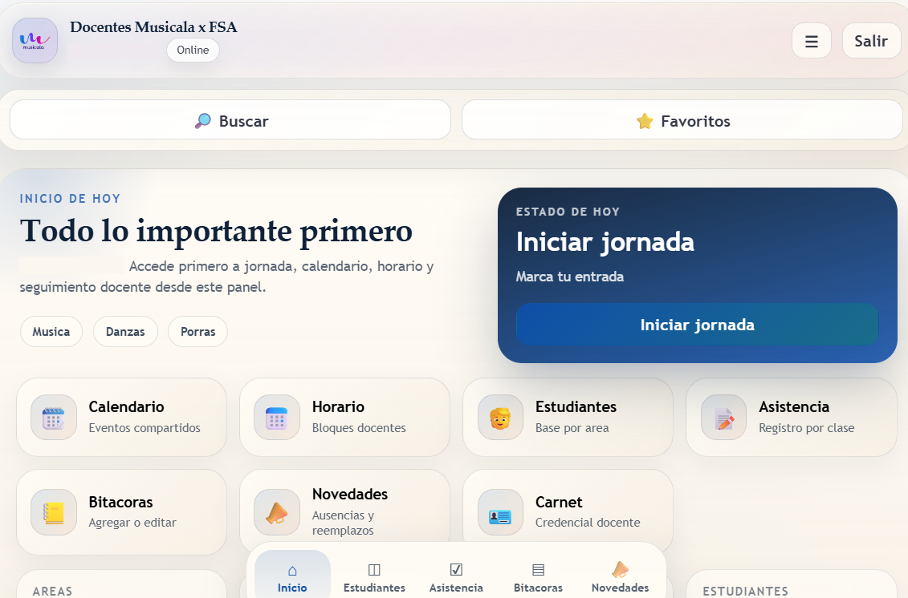
El informe consolidado apoya la revisión de asistencia, novedades y avances por coordinación y líderes. Las cifras son las de la captura, sin atribuir un periodo global.
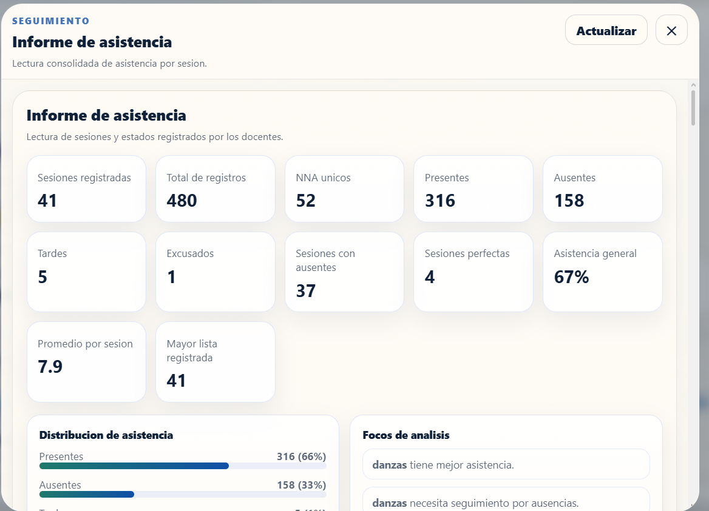
La bitácora real de porrismo documenta objetivos, actividades y próximos pasos: contexto para el seguimiento y los relevos docentes.
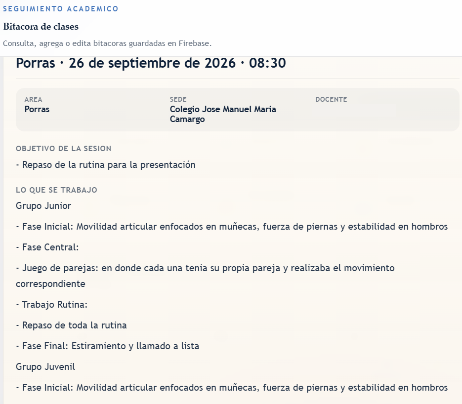
Programación, asistencia, objetivos, bitácoras y novedades.
Consulta de sesiones, consolidación de registros, seguimiento e informes.
Información y recursos pedagógicos según funcionalidades y accesos autorizados.
Accesos autorizados; herramientas y periodicidad de informes según alcance acordado. La articulación pedagógica no supone sincronización automática entre aplicaciones.
Planeación, bitácoras, objetivos y materiales conservan la memoria del grupo. Ante una ausencia o reemplazo docente, permiten retomar desde el punto alcanzado, según el protocolo acordado.
El docente de apoyo revisa el objetivo trabajado, las actividades y el siguiente paso del grupo.
El contenido del ejemplo es ilustrativo. La captura muestra una bitácora real y no acredita este caso simulado.
Los indicadores propuestos pueden apoyar informes operativos y pedagógicos. Periodicidad, profundidad y responsables se acuerdan según el alcance contractual; no se ofrecen informes ilimitados ni reuniones permanentes.
Posible ampliación de la formación artística para GMMMC, sujeta a confirmación de alcance, docentes, instrumentos e intensidad mediante diagnóstico.
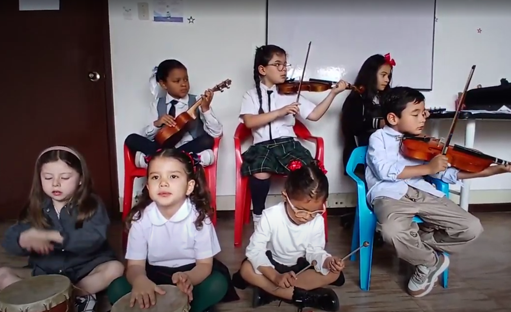
Como ampliación para GMMMC se pueden explorar formación instrumental y vocal, ensayos por secciones y ensamble, con repertorio y muestras según alcance aprobado.
Elige un instrumento para descubrir su ubicación y su aporte.
Ubicación orientativa y adaptable al repertorio y al espacio. Piano y guitarra se muestran como complementos del ensamble.
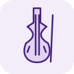
Una melodía que se construye en equipo.
Postura, arco y afinación; diálogo con las demás cuerdas.
Simular la formación ↗Ilustraciones vectoriales originales para esta propuesta. Instrumentos, docentes, edades y niveles se confirman mediante diagnóstico; no implican dotación disponible. Viola y contrabajo pueden evaluarse como ampliaciones.
Muestras de proceso, clases abiertas, presentaciones y exposiciones pueden fortalecer confianza, trabajo en equipo y reconocimiento del progreso en GMMMC.
Un referente para reconocer niveles, requisitos y preparación competitiva.
Liga Bogotana · referencia 2026 ↗Un escenario de ciudad para proyectar el trabajo de equipo.
IDRD · referencia 2026 ↗Una guía para evaluar la ruta apropiada según edad y preparación.
Liga Bogotana · marco por validar en cada edición ↗Un referente de circulación, creación y encuentro con públicos.
Idartes · referencia 2025 ↗Explorar cómo el movimiento también puede dialogar con la imagen.
Idartes · referencia 2025 ↗Un referente para conocer procesos y lenguajes del ballet.
Secretaría de Cultura · referencia 2026 ↗Referentes locales sujetos a la agenda oficial 2027. La participación del GMMMC depende de convocatoria, reglas, categorías, nivel, seguridad, permisos y presupuesto. Las presentaciones y acompañamientos extraordinarios se cotizan por horas y profesionales; no se programan automáticamente en el simulador.
Estimar acompañamientos extraordinarios ↗Exploramos y creamos
Sabemos qué trabajar
Practicamos entre sesiones
Registramos el proceso
Leemos avances
Ajustamos y retomamos
El checklist físico acompaña el recorrido y respalda el seguimiento sin conectividad.
Musicala puede organizar el servicio mediante docentes especializados y protocolos de apoyo, de acuerdo con las disciplinas y el alcance contratado.
Formación y conocimiento de la disciplina.
Trabajo con niños, niñas y adolescentes.
Estrategias según intereses, niveles y necesidades.
Comunicación y colaboración con el grupo y el colegio.
Compromiso con la documentación y la continuidad.
Conocimiento de los protocolos pertinentes a cada práctica.
La formación es el punto de partida. La gestión integral amplía el acompañamiento del mismo proceso.
Una capa adicional para dar más profundidad al seguimiento y apoyar a coordinación.
Para las disciplinas ofrecidas al GMMMC y sus posibles ampliaciones. La misma tarifa por tiempo de cada profesional; los costos extraordinarios se especifican por separado.
Ejemplo de planeación para GMMMC, no contratado. Elige fechas y días: el presupuesto usa las sesiones reales del calendario.
Toca una fecha de clase para excluirla o volver a incluirla.
Estimación sujeta a alcance y calendario confirmados. Gestión integral, transporte, inscripciones, vestuario, instrumentos y logística se cotizan aparte.
Registra únicamente las horas adicionales. Los profesionales del evento se calculan una vez, sin multiplicar por los grupos.
Referencias preliminares para GMMMC. Fechas, días y horarios se acuerdan tras confirmar grupos y alcance; el simulador es un escenario editable.
Diagnóstico de grupos, inventario, selección docente, permisos, calendario y accesos.
Línea base, objetivos, rutinas de registro y primera muestra de progreso.
Revisión conjunta de participación, aprendizajes y necesidades.
Procesos de ensamble y cierre, muestras o competencias según aprobación.
GMMMC / FSA: convocatoria, espacios, apertura de grupos, información institucional, autorizaciones y definición de recursos según convenio.
Musicala: propuesta pedagógica, docentes contratados, gestión según alcance acordado, registros y entregables acordados.
Confirmar duración de horas y sesiones, política de cancelación y reprogramación, alcance de informes, acompañamiento a muestras, recursos instrumentales y frecuencia de reuniones.
La continuidad se logra con planificación realista, no con disponibilidad ilimitada.
El propósito de esta propuesta es construir una experiencia artística accesible, sensible y sostenible, donde cada sesión aporte a un proceso que continúa.
Musicala × Fundación San Antonio · GMMMC 2027